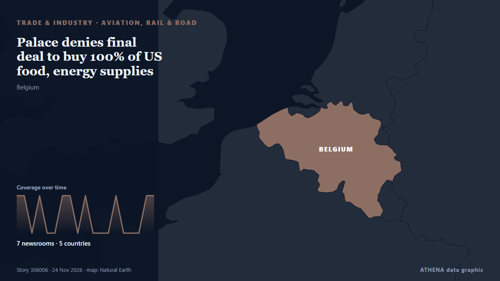

Commerce, industrie et infrastructures
SponsoriséPrésenté par  Cybernetics and Artificial Intelligence Lab Welcome to the Cybernetics and Artificial Intelligence Laboratory, established at the Department of Business Administration of the National and Kapodistrian University of Athens. The lab is headed by Professor Dimitrios Thomakos. The lab aims to do research that can be published in top venues. Our research uses tools and methods of Artificial Intelligence, and lies in the following areas: - Forecasting - Decision making - Cyber security - Finance We are always looking forward to collaborating with exceptional students!
Cybernetics and Artificial Intelligence Lab Welcome to the Cybernetics and Artificial Intelligence Laboratory, established at the Department of Business Administration of the National and Kapodistrian University of Athens. The lab is headed by Professor Dimitrios Thomakos. The lab aims to do research that can be published in top venues. Our research uses tools and methods of Artificial Intelligence, and lies in the following areas: - Forecasting - Decision making - Cyber security - Finance We are always looking forward to collaborating with exceptional students!
Les titres sont affichés en anglais, tels que publiés.

Aérien, rail et routePalace denies final deal to buy 100% of US food, energy supplies
Malacañang on Tuesday, 24 November 2026, maintained that no agreement had been finalized requiring the Philippines to source all its agricultural and energy… de Daily Tribune
| 12 nov. | 95 |
|---|---|
| 13 nov. | 85 |
| 14 nov. | 77 |
| 15 nov. | 66 |
| 16 nov. | 122 |
| 17 nov. | 96 |
| 18 nov. | 102 |
| 19 nov. | 71 |
| 20 nov. | 98 |
| 21 nov. | 34 |
| 22 nov. | 57 |
| 23 nov. | 96 |
| 24 nov. | 57 |
| 25 nov. | 10 |
Trump set to unveil new set of tariffs on India, China, EU, 13 other trade partners
Trade representative expected to unveil probe results as soon as this week, according to reports. de Anadolu Agency (English)
Two more oil tankers explode in Strait of Hormuz unsafe route
The United Kingdom Maritime Trade Operations (UKMTO) reported a vessel fire in the Strait of Hormuz on Thursday, October 29; simultaneou ... de IranWire
China Southern Airlines unit to buy 50 Boeing 737-8 planes
The agreement marks the US planemaker's first major order from China in almost a decade. de Al Jazeera English
Trump's next Section 301 tariffs raise stakes for US-China trade truce deadline
The Trump administration is preparing new US tariffs after investigating alleged excess factory capacity across 16 trading partners, including China, Taiwan, Japan, South Korea and the European… de DigiTimes Asia
Thailand vehicle production hits 6-year low after flooding
BANGKOK: Thailand’s car production in October fell 35.19% from a year earlier, compared with a 6.08% decline in September, the Federation of Thai Industries said on Tuesday. de Business Recorder
Singapore Shipping orders PCTC pair from Guangzhou Shipyard International
First partnership to deliver LNG dual-fuel car carriers for the owner’s long-term fleet renewal and low-carbon shipping road map. de Seatrade Maritime
DR Congo halts cobalt exports again amid drop in prices
The Democratic Republic of Congo will again suspend cobalt exports starting at the end of the month in an attempt to boost prices. de Africanews (English)
Le Pen Condemns Turkey Over Libya Maritime Deal, Cites UNCLOS
French far-right politician backs Egypt's position in eastern Mediterranean dispute; Greece's considers agreement as baseless and illegal. de to vima
EU officially limits imports of Chinese hybrid vehicles
Brussels and Beijing agreed to limit exports of Chinese plug-in hybrids and other hybrid vehicles to the 27-nation bloc as part of a deal to avoid a trade war. de Free Malaysia Today
Belgium inaugurates Europe’s largest satellite factory
Belgium’s King Philippe on Tuesday, Nov. de Kyiv Post
Saddam Hussein's Boeing 747 could be yours for $900,000
An Iraqi government plane used by former dictator Saddam Hussein has been put up for auction with an estimated value of $900,000. de The National
Disruptions to regional trains, buses, trams on 2nd day of public transport strike
Public transport users can again expect disruptions to regional trains, buses, and trams today. de NL Times
At least 36 trains robbed; 14 accused in $22.5 million Nike cargo theft racket in US
Fourteen people have been indicted in the US for allegedly stealing over $22.5 million worth of cargo from at least 36 freight trains in Southern California. de Times of India (World)
Israel approves flydubai’s return to Tel Aviv pending security clearance
The decision was made after a visit to the UAE by the Israeli Transportation Ministry director-general. de The Straits Times
Russia to Spend $576m on Kaliningrad Supply Ferries
Russia will spend 47 billion roubles ($576 million) to build two giant rail ferries to ensure uninterrupted supplies to its Baltic exclave of Kaliningrad amid rising tensions in the region, Prime… de MarineLink
Indonesia Factory Fire Kills 26 as Rescuers Search for Missing Workers
At least 26 people have died and eight others remain missing after a fire tore through a confectionery factory in Indonesia’s Banten province, as authorities investigate the cause and possible… de Khaama Press
Explosions reported in Strait of Hormuz
Ahmad Hayat-Moghaddam, Vice Chairman of the Iranian Parliament’s National Security and Foreign Policy Committee, announced on Tuesday, N ... de IranWire
Malaysia to repatriate thousands more Myanmar migrants
KUALA LUMPUR: Malaysia's Prime Minister Anwar Ibrahim said on Tuesday the country will send more than 6,500 migrants back to Myanmar in a new round of repatriations. de Oman Observer
IRGC Reports Three Tankers Exploded in Hormuz After Hitting Mines
Iran's Revolutionary Guards navy reported that three tankers exploded and caught fire in the Strait of Hormuz after striking naval mines ... de IranWire
Iran prepares oil tanker convoy to break US naval blockade, threatens Gulf facilities - report
Iran is reportedly preparing a convoy of more than 14 oil tankers to challenge the US naval blockade, as media outlets close to the IRGC threaten attacks on Gulf energy infrastructure. de The Jerusalem Post
24-hour strike by Greek seafarers on November 25
Athens, Greece (Ports Europe) November 23, 2026 – Greek seafarers’ unions will start a nationwide 24-hour strike on November 25, from 00:01 to midnight. de Ports Europe
UN food agency chief warns wars jeopardize food aid for 7.3 million more people
World Food Programme Executive Director Luke Lindberg warned on Monday that shipping chokepoints linked to… de BusinessWorld
Indonesia sweets factory fire leaves three workers dead and 37 missing
Indonesian rescuers deployed to a burning factory in Banten province on Sunday following reports that workers may be ... de Antara (English)
De Villiers alleges Australia tampered with ball in 2018 Durban Test
Former South Africa batsman says ball-tampering began before Cape Town scandal. de Express Tribune
Cool Carriers Welcomes Snow Land, First Reefer with Gate Rudder
Cool Carriers, the world’s largest operator of specialized reefer vessels, took delivery of Snow Land from Kitanihon Shipbuilding in Japan on November 12, 2026. de MarineLink
Land blockade of Iran almost impossible: FM Araghchi
TEHRAN, Nov. 23 (MNA) – Iranian Foreign Minister Abbas Araghchi said a land blockade of Iran would be virtually impossible given the country’s vast geography and variety of neighbors. de Mehr News (English)
Father and daughter travelling to family baptism detained by ICE at Seattle airport
Bystanders boarding the Alaska Airlines flight at Seattle-Tacoma International Airport captured footage of the arrest. de The Independent
U.S. trade chief sees progress in trade talks but faults Canada for Beijing-friendly moves
U.S. Trade Representative Jamieson Greer says Washington and Ottawa are making progress toward a trade agreement but that Canada's growing trade relationship with China remains a concern. de CBC News (alternative feed)
Lego picks Portugal to build its 8th factory
The US$1.1 billion investment will create more than 1,000 jobs, with construction set to begin in 2027 and production expected to start in 2030. de Free Malaysia Today
Delta system outage delays 1,300+ US flights
Shafaq News- Washington An outage in Delta Air Lines’ weight-and-balance system delayed more than 1,300 flights across the United States on Sunday, the airline said. de Shafaq News (English)
US ports face surge in cyberattack attempts, threatening vital trade routes: Report
Port of Los Angeles recorded 120 million attempted cyberattacks in August, while major US crude oil export hub faces thousands of daily threats, Financial Times reports. de Anadolu Agency (English)
HT Evening News Brief November 22: Nepal PM's visit; COP31 deadlock, India-New Zealand test and more
Here's a quick recap of the day's top headlines from India, the world and the field of sports and entertainment. de Hindustan Times
Russia Hits Ukraine’s Energy Sector 100 Times in a Week
Russia carried out 100 attacks on Ukraine’s energy, oil and gas infrastructure over the past week, contributing to 224 recorded damage incidents, authorities said. de Kyiv Post
Vietnam Embassy celebrates Vietnamese Culture Day in Phnom Penh
The Embassy of Vietnam in Cambodia has hosted a cultural showcase in Phnom Penh to mark Vietnam Culture Day, spotlighting the country’s traditional culinary heritage and its world-renowned noodle… de Khmer Times